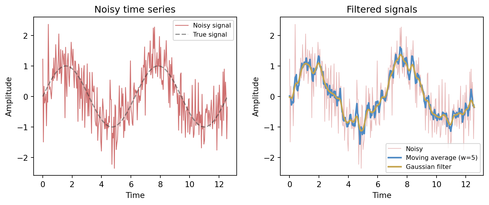
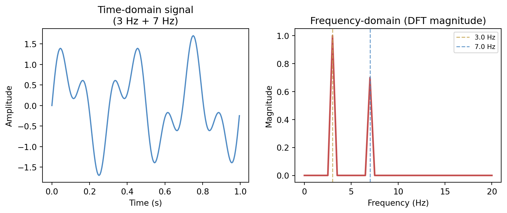
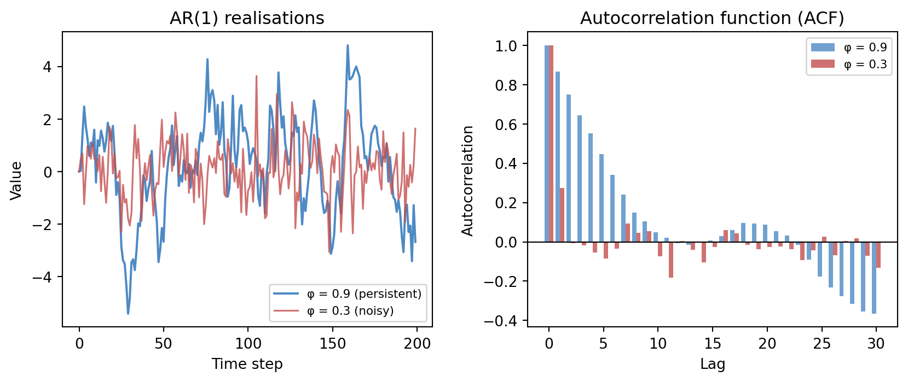
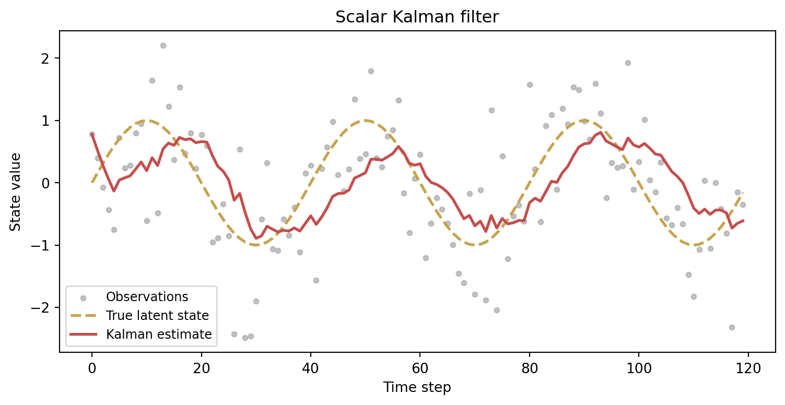

11 Signals, Sequences, and State Estimation
Much of the world does not arrive as isolated cases. It arrives in time. Measurements come as sequences, decisions affect later states, hidden conditions evolve between observations, and useful models must remember more than the present instant.
That is why signals and state estimation belong in a mathematics-for-AI book. They provide a disciplined language for temporal structure. They remind us that data are often not unordered tables but traces of evolving systems.
This chapter connects older ideas from sequences, transforms, control, and estimation to modern learning tasks such as time-series forecasting, filtering, sequence modelling, and latent-state inference.
NoteIn this chapter
- Treat time series as structured sequences, not shuffled rows.
- Use filtering to separate signal from noise (and admit the trade-offs).
- Model memory (dependence on the past) with simple autoregressive structure.
- Infer latent state when what matters cannot be measured directly.
11.1 Guiding examples
- Smoothing a noisy trace (filtering as convolution)
- Tracking a hidden process (Kalman-style state estimation)
TipRunning example: Alberta wildfire smoke and station PM2.5
This chapter’s job in the smoke story is to treat PM2.5 as a time process with latent structure:
- Compare filtering (smoothing station noise) with forecasting (predicting future levels).
- Use a simple state-space viewpoint: observations are noisy; the “true” local air-quality state evolves.
- Watch for regime shifts: clear-air dynamics behave differently from smoke episodes.
11.2 Prerequisite anchors
The strongest backward links are:
vol-04/04-sequences-series.qmdvol-07/fourier-pdes/01-fourier-series.qmdvol-07/fourier-pdes/02-fourier-transforms.qmdvol-08/01-control-feedback.qmdvol-08/02-discrete-systems-signals.qmdvol-08/05-estimation-inverse.qmd
11.3 Time series are structured sequences
A time series is not merely a list of numbers written in order. The order itself is part of the mathematics.
If we observe river flow each day, sensor values each second, or sales each week, then nearby values may be related through inertia, forcing, seasonality, delay, noise, and control. Time introduces asymmetry: the future is predicted from the past, not the other way round.
This immediately changes the modelling logic. We are no longer asking only how variables co-vary, but how present values inherit structure from earlier ones.
11.4 Memory and dependence
Some systems can be predicted reasonably well from the current observation alone. Others carry memory. In a heated building, temperature depends on recent weather and recent control actions. In speech, a sound depends on preceding sounds. In a financial series, volatility often clusters over time.
The mathematical question is therefore not only “what are the variables?” but “how much past should the model remember?”
This is one of the main bridges between classical signal processing and machine learning. Sequence models differ partly in how they represent memory.
11.5 Convolution and filtering
Convolution enters whenever the current output depends on a weighted accumulation of nearby or previous inputs. It is one of the recurring structural ideas of the chapter because it links signal processing, time-series analysis, and modern neural architectures.
At an intuitive level, a filter transforms a signal by emphasising some components and suppressing others. A smoothing filter may reduce noise. A high-pass filter may highlight rapid changes. A matched filter may help identify a known pattern inside a noisy trace.
In data science terms, filtering is a way of shaping information before or during inference. In AI terms, convolution becomes a learned pattern detector in time or space.
A moving-average filter of window w replaces each sample x_t with
y_t = \frac{1}{w} \sum_{k=0}^{w-1} x_{t-k},
a convolution of the signal with a rectangular kernel. A Gaussian filter uses a bell-shaped kernel, giving a smoother result with less ringing.
Both filters suppress the high-frequency noise, but they differ in character. The moving average is a sharp rectangular kernel in time, which can introduce edge artefacts. The Gaussian kernel tapers smoothly, trading some time resolution for cleaner suppression of high-frequency content.
11.6 Frequency viewpoints
The Fourier viewpoint teaches that a signal can often be understood not only in time but also in frequency. Repetition, oscillation, trend, and noise leave different signatures in different representations.
This duality matters because some structures are easier to see after transformation. Periodic components may be obscure in the raw time plot but clear in the frequency domain. Smoothing may be described as suppressing high-frequency content. Compression may be possible because only a limited band of behaviour carries most of the meaningful variation.
The general lesson matches earlier chapters: a good representation makes structure visible.
For a discrete signal x_0, x_1, \ldots, x_{N-1}, the Discrete Fourier Transform (DFT) is
X_k = \sum_{n=0}^{N-1} x_n \, e^{-2\pi i k n / N}, \qquad k = 0, 1, \ldots, N-1.
Each coefficient X_k measures how much of the frequency k/N (cycles per sample) is present in the signal. The magnitude |X_k| is the spectrum.

The frequency-domain view immediately reveals the two-component structure that is much harder to read from the oscillating time-domain trace. This visibility is why signal processing and data compression alike work in frequency representations: energy tends to concentrate in a small number of coefficients, and noise is often spread broadly across all frequencies.
11.7 Autoregression and lagged structure
One of the simplest temporal models assumes that the present depends on recent past values of the same process. This is the autoregressive instinct. We model the series using lagged copies of itself, perhaps together with external inputs.
Even when the final model is more elaborate, the autoregressive viewpoint is worth understanding because it teaches a key lesson: time-series prediction often means turning memory into state variables or lagged features.
This also clarifies why random shuffling is often inappropriate in temporal problems. The order is not incidental; it is part of the data-generating structure.
An AR(1) model for a zero-mean series is simply
x_t = \phi \, x_{t-1} + \varepsilon_t, \qquad \varepsilon_t \sim \mathcal{N}(0,\, \sigma^2).
The coefficient \phi controls persistence: values near 1 produce smooth, slowly-varying series; values near 0 produce series that look almost like white noise. The autocorrelation function (ACF) measures this memory directly — \mathrm{ACF}(\phi, h) = \phi^h for lag h in an AR(1) model, decaying geometrically.

11.8 State-space thinking
Many systems are governed by hidden state. We do not observe the full condition of the system directly, but we do observe outputs influenced by it (Bishop 2006).
A state-space model separates two ideas:
- how the hidden state evolves
- how observations arise from that state
This is a powerful modelling grammar. It appears in tracking, navigation, control, environmental monitoring, econometrics, and neuroscience. It also reappears in modern sequence models that maintain internal representations over time.
State-space thinking is valuable because it distinguishes what the system is from what the sensors happen to report.
11.9 Latent dynamics
The word latent means hidden, not imaginary. A latent variable represents structure that is not directly observed but helps explain the observations.
A room’s thermal state is latent if we measure only a few temperatures. A person’s health status is latent if we observe only tests and symptoms. A moving robot’s true pose is latent if we observe noisy sensors.
Learning in such settings often means inferring the hidden state while it changes. That is more subtle than ordinary regression because the target is only partly visible.
11.10 Recursive estimation
Recursive estimation updates beliefs as new observations arrive. Instead of refitting a model from scratch each time, we carry forward a current estimate and revise it incrementally.
This is one of the most practically important ideas in dynamic systems. It makes real-time inference possible. The logic is especially clear in filtering:
- predict the next state from the current one
- receive a new observation
- combine prediction and observation into an updated estimate
The philosophy should feel familiar by now. It is Bayesian in spirit, even when expressed in engineering language: hold a belief, encounter evidence, revise.
For a scalar linear-Gaussian system the Kalman filter implements this recursion exactly. The state equation and observation equation are
x_t = x_{t-1} + w_t, \qquad w_t \sim \mathcal{N}(0, Q), z_t = x_t + v_t, \qquad v_t \sim \mathcal{N}(0, R).
The predict step advances the estimate and its variance; the update step incorporates the new observation via the Kalman gain (Murphy 2022):
K_t = \frac{P_{t|t-1}}{P_{t|t-1} + R}, \qquad \hat{x}_{t|t} = \hat{x}_{t|t-1} + K_t (z_t - \hat{x}_{t|t-1}).

The Kalman gain K_t balances trust in the prediction against trust in the observation. When R is large (noisy sensors) the filter leans on the dynamic model; when Q is large (unpredictable dynamics) the filter leans on fresh observations. The figure shows the filter tracking a smooth sinusoid through substantial noise — the estimate is never perfectly accurate, but it is systematically better than the raw measurements.
11.11 Forecasting versus filtering
It helps to distinguish two common temporal tasks.
Forecasting aims ahead. Given the past and present, what will happen next?
Filtering aims inward. Given noisy observations, what is the best estimate of the current hidden state?
The same system may require both. A flood-management model may filter present watershed conditions and then forecast future streamflow. A speech system may infer current phonetic structure while also anticipating what comes next.
11.12 Sequence models in AI
Modern AI systems often rediscover older signal and systems ideas under new names. Recurrent models, attention mechanisms, convolutional sequence models, and state-space sequence models all address the same broad challenge: how should a learning system represent temporal dependence?
The details differ, but the mathematics does not begin from nowhere. Memory, latent state, filtering, and transformed representations are older and deeper than the latest architecture.
11.13 A hydrology example
Suppose we want to estimate streamflow in a basin using rainfall, snowpack, and gauge measurements. The present day’s flow depends not only on today’s rainfall but on accumulated catchment storage, melt processes, and delayed routing.
A static regression may catch some correlation, but a temporal model can express much more:
- lagged dependence
- hidden watershed state
- uncertainty in forcing and measurement
- recursive updates as new observations arrive
This is a good example of why temporal modelling belongs naturally beside machine learning rather than outside it.
11.14 Interactive: signal filtering explorer
The cell below lets you adjust the noise level, signal frequency, and filter window. Watch how a wider moving-average window removes more noise but blurs the underlying oscillation.
TipWhat to try
- Increase
NOISE_LEVELto 2.0 and raiseFILTER_WINDOWuntil the signal re-emerges — notice the phase lag. - Set
SIGNAL_FREQto 0.5 (slow wave) and try a very small window (2). Then setSIGNAL_FREQto 3.0 (fast wave) with the same window and compare. - Set
FILTER_WINDOWto 1 to recover the raw noisy signal.
import numpy as np
import matplotlib
matplotlib.use('Agg')
import matplotlib.pyplot as plt
import io, base64
# --- Try changing these parameters ---
FILTER_WINDOW = 7 # integer 1–20
NOISE_LEVEL = 0.5 # standard deviation of added noise
SIGNAL_FREQ = 1.0 # frequency of the underlying sine wave (Hz)
# Clamp
FILTER_WINDOW = max(1, min(int(FILTER_WINDOW), 20))
NOISE_LEVEL = max(0.0, float(NOISE_LEVEL))
SIGNAL_FREQ = max(0.1, float(SIGNAL_FREQ))
rng = np.random.default_rng(42)
t = np.linspace(0, 4 * np.pi / SIGNAL_FREQ, 400)
clean = np.sin(2 * np.pi * SIGNAL_FREQ * t / (2 * np.pi))
noisy = clean + rng.normal(0, NOISE_LEVEL, len(t))
kernel = np.ones(FILTER_WINDOW) / FILTER_WINDOW
filtered = np.convolve(noisy, kernel, mode='same')
fig, axes = plt.subplots(1, 2, figsize=(9, 4))
ax = axes[0]
ax.plot(t, noisy, color='#c44e4e', lw=1, alpha=0.7, label='Noisy signal')
ax.plot(t, clean, color='#333333', lw=1.5, linestyle='--', alpha=0.6,
label='True signal')
ax.set_title('Original noisy signal')
ax.set_xlabel('Time')
ax.set_ylabel('Amplitude')
ax.legend(fontsize=8)
ax = axes[1]
ax.plot(t, noisy, color='#c44e4e', lw=0.8, alpha=0.3, label='Noisy')
ax.plot(t, filtered, color='#4e8ac4', lw=2,
label=f'Moving avg (w={FILTER_WINDOW})')
ax.plot(t, clean, color='#333333', lw=1.5, linestyle='--', alpha=0.6,
label='True signal')
ax.set_title(f'After filtering (noise={NOISE_LEVEL:.1f})')
ax.set_xlabel('Time')
ax.set_ylabel('Amplitude')
ax.legend(fontsize=8)
fig.tight_layout(pad=2.0)
buf = io.BytesIO()
fig.savefig(buf, format='png', dpi=96, bbox_inches='tight')
buf.seek(0)
img_b64 = base64.b64encode(buf.read()).decode()
print(f'<img src="data:image/png;base64,{img_b64}" style="max-width:100%">')11.15 Looking ahead
The next chapter turns from signals and uncertainty in time toward information and objective design. That move is natural because learning systems do not only store and transform information; they also need principled measures of surprise, uncertainty, and mismatch.
For now, the main ideas to carry forward are:
- time series are structured by order and dependence
- filtering and convolution are central tools for temporal information
- state-space models distinguish hidden dynamics from noisy observations
- recursive estimation updates beliefs as data arrive
- modern sequence models continue older mathematical themes of memory and state
11.16 Exercises and prompts
- Give an example of a problem where random shuffling of the observations would destroy important structure.
- Explain in words the difference between forecasting a future quantity and estimating a current hidden state.
- Why is a latent variable not the same thing as a fictitious one?
- Describe a real system in which memory of earlier inputs affects present output. What kind of state might summarise that memory?
Bishop, Christopher M. 2006. Pattern Recognition and Machine Learning. Springer.
Murphy, Kevin P. 2022. Probabilistic Machine Learning: An Introduction. MIT Press. https://probml.github.io/pml-book/book1.html.